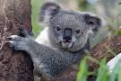

롤 좆또 못함
A형이라서 개 병신임
임혜원 특 A형이라서 개돼지임
호주 동부에 서식하는 유대하강, 캥거루목에 속하는 동물이다.
임혜원은 그냥 코알라새끼다
생김새가 곰처럼 생겼기 때문에[1] 토종곰, 즉 네이티브 베어(Native Bear)라고 부르기도 하며, 과거에는 나무곰(Tree Bear)이나 원숭이곰(Monkey Bear)이라는 명칭도 있었다.
주머니곰, 나무타기주머니곰 등으로도 불린다지만 생활사 등 여러 면에서는 오히려 나무늘보와 가깝다고 볼 수 있다.[2] 굳이 곰을 꼽자면 생활사가 매우 유사한 판다일 것이다. 한마디로 유대류 버전 나무늘보인 셈. 애초에 호주의 유대류 중에는 곰에 상응하는 종이 없다. 유대류의 다양성을 생각해 보면 이상한 일.[3] 생물학적으로 가장 가까운 동물은 웜뱃이라고 한다. 단 웜뱃과는 약 4000만 년 전에 공통조상에서 분리하였다.
북실북실하고 보드라운 털과 둥글둥글한 생김새 때문에 인기가 많아 살아 있는 테디베어라고도 불리며, 실제로 코알라의 외모도 아기곰의 얼굴과 인간 아기나 원숭이의 몸통을 합친 듯한 외관 때문에 귀여운 동물이라는 평이 많다. 유칼립투스 나무에 매달린 코알라 어미와 등에 업힌 새끼의 모습은 호주를 상징하는 모습 중 하나로 호주 홍보에서도 코알라는 캥거루와 함께 필수요소다. 그래서인지 상품화가 아주 잘 된 동물 중 하나
